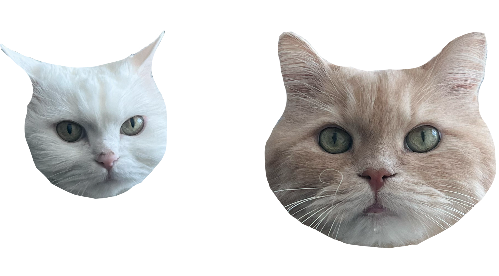
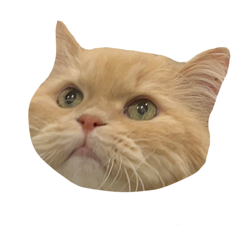
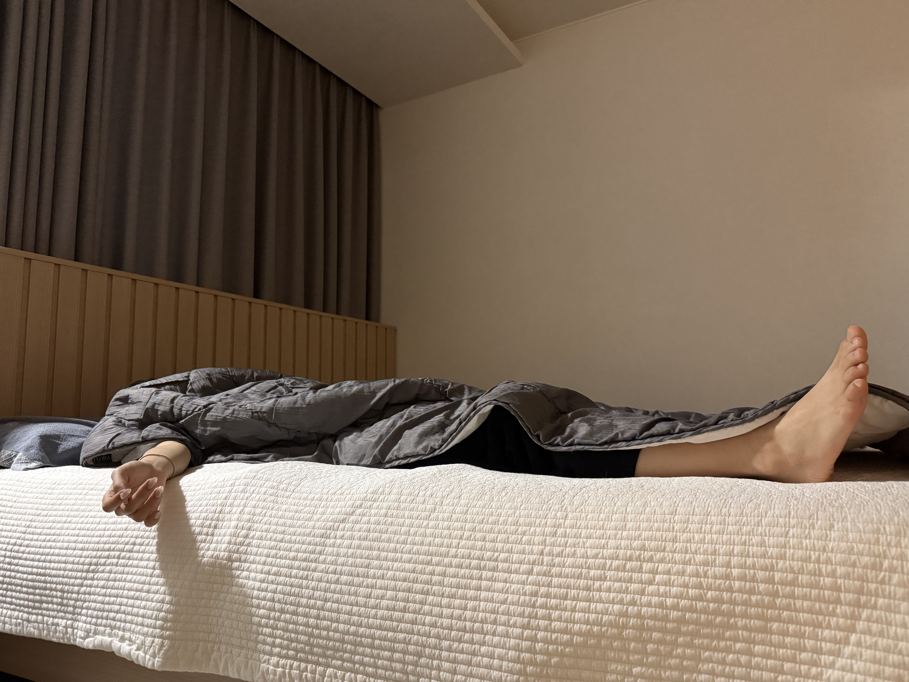
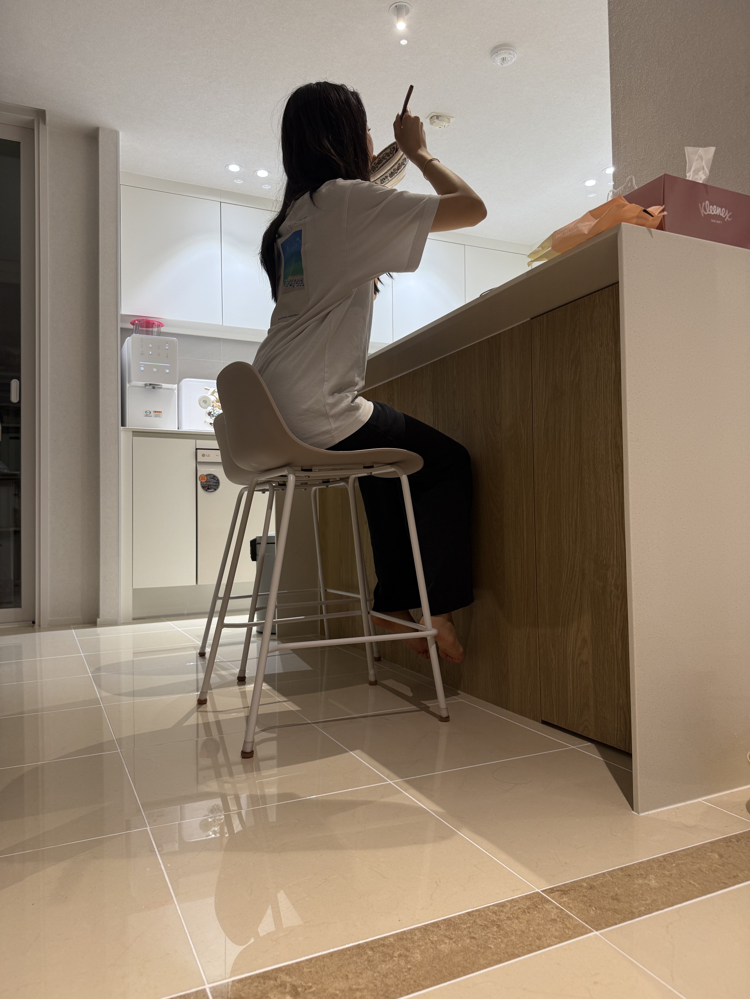
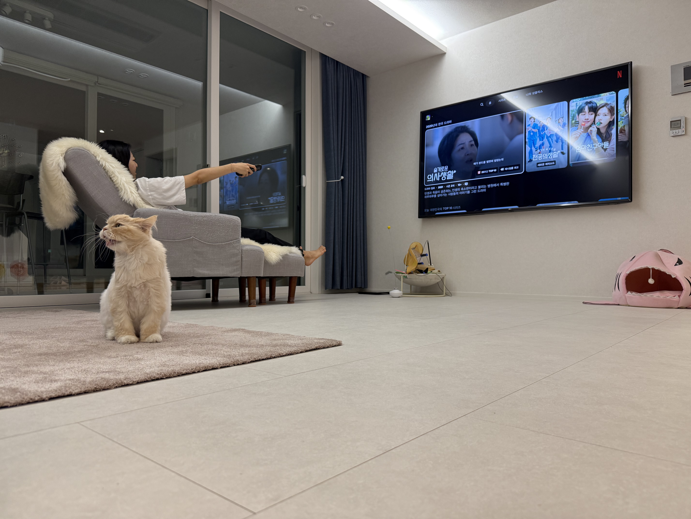
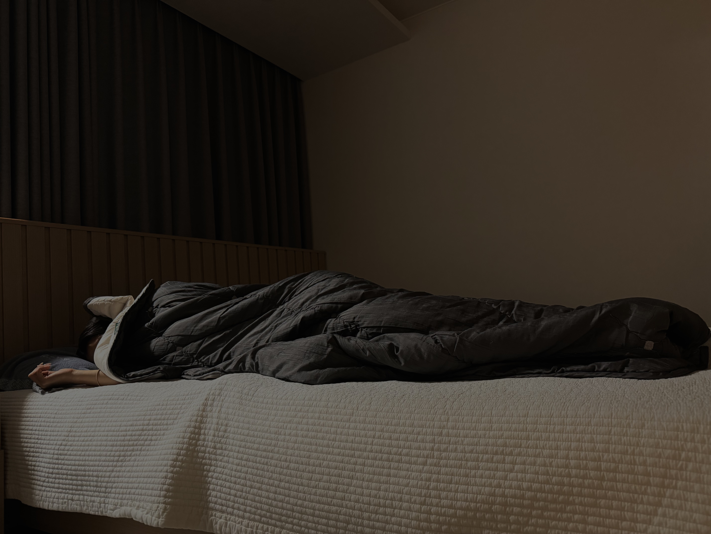
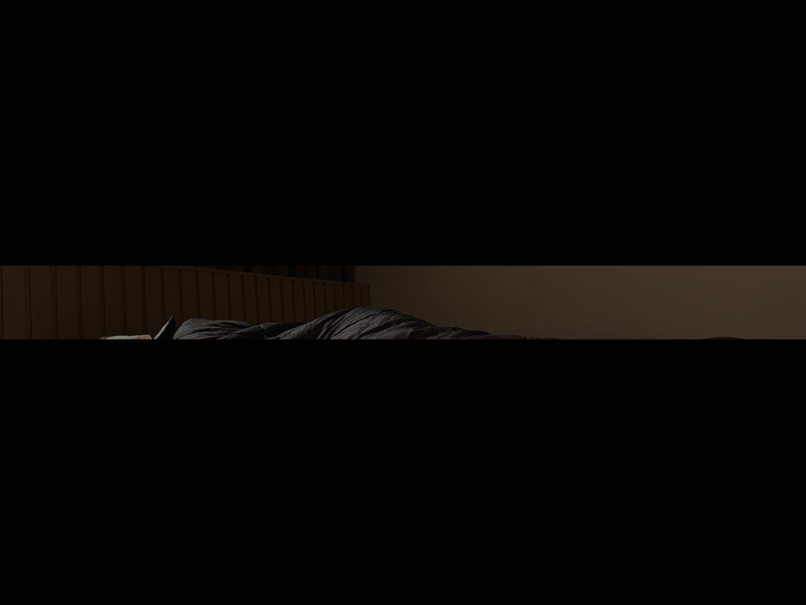
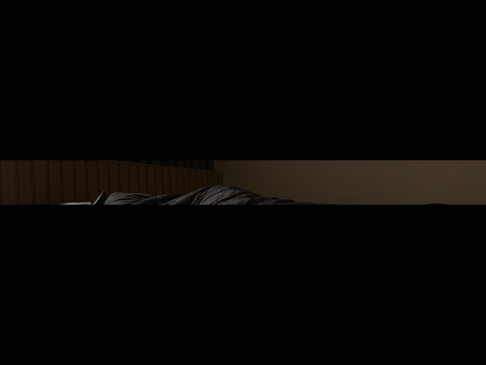

Loading…
CAM 연결중...

CAM 1
● REC
CAM 2
● REC
CAM 3
● REC
CAM 4
● REC
CAM 01 | 2025-04-22 16:23:01

오늘도 관찰을 시작합니다 . . .
● REC
2025-04-22 07:34:32
SIGNAL: STABLE

CAM 01 - Room
[07:01:12] 움직임 없음
[07:03:44] 고양이 출현
[07:04:10] 의심스러운 움직임 감지
[07:03:44] 고양이 출현
[07:04:10] 의심스러운 움직임 감지
▶ 객체 분석 결과
- 인간 탐지됨 (정확도 86%)
- 상태: 수면 중
- 위치: 침대 우측
- 3번째 알람도 무시
- 기상 시간 평균보다 7분 지연
- 여전히 이불 속에 갇혀있음
- 의지 약화 단계로 분류
- 인간 탐지됨 (정확도 86%)
- 상태: 수면 중
- 위치: 침대 우측
- 3번째 알람도 무시
- 기상 시간 평균보다 7분 지연
- 여전히 이불 속에 갇혀있음
- 의지 약화 단계로 분류
● REC
2025-04-22 12:04:30
SIGNAL: STABLE

CAM 02 - Kitchen
[12:04:12] 대상자, 식탁 접근
[12:04:28] 식사 개시 (젓가락 감지)
[12:05:35] 씹는 속도 안정적
[12:07:22] 대상자, 반찬 리필 시도
[12:08:40] 입꼬리 상승 감지 → 맛있음으로 추정
[12:09:50] 식사 종료 후 의자 밀림 감지
[12:04:28] 식사 개시 (젓가락 감지)
[12:05:35] 씹는 속도 안정적
[12:07:22] 대상자, 반찬 리필 시도
[12:08:40] 입꼬리 상승 감지 → 맛있음으로 추정
[12:09:50] 식사 종료 후 의자 밀림 감지
▶ 객체 분석 결과
- 인간 탐지됨 (정확도 99%)
- 상태: 식사 중
- 식사 속도: 평균 1.4초 / 한 입
- 주 메뉴: 김치찌개 + 계란말이
- 특이사항: 반찬 편식 많음
-식사 만족도 분석 중... → 결과: 매우 만족
- 인간 탐지됨 (정확도 99%)
- 상태: 식사 중
- 식사 속도: 평균 1.4초 / 한 입
- 주 메뉴: 김치찌개 + 계란말이
- 특이사항: 반찬 편식 많음
-식사 만족도 분석 중... → 결과: 매우 만족
● REC
2025-04-22 20:34:11
SIGNAL: STABLE

CAM 03 - Living Room
[20:14:05] 대상자, 소파 착석 감지
[20:14:16] 리모컨 조작 → TV 전원 ON
[20:15:30] 화면 밝기 변화 감지 → 영상 시청 중
[20:16:45] 웃음 감지 (입꼬리 상승 + 어깨 진동)
[20:18:10] 과자 섭취 시작
[20:25:00] 정자세 유지 → 몰입도 상승 추정
[20:14:16] 리모컨 조작 → TV 전원 ON
[20:15:30] 화면 밝기 변화 감지 → 영상 시청 중
[20:16:45] 웃음 감지 (입꼬리 상승 + 어깨 진동)
[20:18:10] 과자 섭취 시작
[20:25:00] 정자세 유지 → 몰입도 상승 추정
▶ 객체 분석 결과
- 인간 탐지됨 (정확도 98%)
- 상태: 영상 시청 중
- 몰입도 지수: ★★★★☆
- 반응: 미소 + 고개 끄덕임 다수 감지
- 시청 콘텐츠: 드라마 또는 예능으로 추정
- 특이사항: 간식 2회 섭취, TV 리모컨 장악
- 인간 탐지됨 (정확도 98%)
- 상태: 영상 시청 중
- 몰입도 지수: ★★★★☆
- 반응: 미소 + 고개 끄덕임 다수 감지
- 시청 콘텐츠: 드라마 또는 예능으로 추정
- 특이사항: 간식 2회 섭취, TV 리모컨 장악
● REC
2025-04-22 22:14:32
SIGNAL: STABLE

CAM 04 - Desk
[22:15:10] 대상자, 노트북 활성화
[22:18:32] 키보드 타이핑 시작
[22:38:45] 집중 모드 진입 감지 (시선 고정 + 무표정)
[22:56:12] 손 움직임 속도 증가 → 아이디어 정리 중
[23:08:30] 한숨 감지 → 어려운 구간 진입
[23:10:44] 음료 섭취 → 집중 유지 시도
[23:12:18] 마우스 클릭 증가 → 자료 검색 중
[22:18:32] 키보드 타이핑 시작
[22:38:45] 집중 모드 진입 감지 (시선 고정 + 무표정)
[22:56:12] 손 움직임 속도 증가 → 아이디어 정리 중
[23:08:30] 한숨 감지 → 어려운 구간 진입
[23:10:44] 음료 섭취 → 집중 유지 시도
[23:12:18] 마우스 클릭 증가 → 자료 검색 중
▶ 객체 분석 결과
- 인간 탐지됨 (정확도 97%)
- 상태: 과제 수행 중
- 집중도 지수: ★★☆☆☆
- 타이핑 속도: 평균 55타/분
- 표정 분석: 진지함 + 약간의 혼란
- 환경 분석: 주변 정숙, 배경 음악 노동요
- 예측: 과제 마감 12시간 이내로 추정됨
- 인간 탐지됨 (정확도 97%)
- 상태: 과제 수행 중
- 집중도 지수: ★★☆☆☆
- 타이핑 속도: 평균 55타/분
- 표정 분석: 진지함 + 약간의 혼란
- 환경 분석: 주변 정숙, 배경 음악 노동요
- 예측: 과제 마감 12시간 이내로 추정됨
● REC
2025-04-23 00:47:39
SIGNAL: STABLE

CAM 05 - Room
[00:48:10] 대상자, 침대 접근
[00:49:35] 조명 OFF 감지 → 휴식 모드 진입
[00:51:02] 심박·호흡 안정화 → 수면 개시 추정
[01:17:45] 뒤척임 감지 (+2 cm 이동)
[02:03:11] 깊은 수면 단계 진입(REM)
[03:28:57] 고양이, 베개 점령 시도 ⚠
[00:49:35] 조명 OFF 감지 → 휴식 모드 진입
[00:51:02] 심박·호흡 안정화 → 수면 개시 추정
[01:17:45] 뒤척임 감지 (+2 cm 이동)
[02:03:11] 깊은 수면 단계 진입(REM)
[03:28:57] 고양이, 베개 점령 시도 ⚠
▶ 객체 분석 결과
- 인간 탐지됨 (정확도 93 %)
- 상태 : 숙면 중 (깊은 수면 87 %)
- 뒤척임 횟수 : 2회 / 시간
- 평균 호흡수 : 12 회/분
- 특이사항 : 고양이 접근으로 베개 영역 침범
- 예측 기상 시각 : 07 : 10 ± 5 분
- 인간 탐지됨 (정확도 93 %)
- 상태 : 숙면 중 (깊은 수면 87 %)
- 뒤척임 횟수 : 2회 / 시간
- 평균 호흡수 : 12 회/분
- 특이사항 : 고양이 접근으로 베개 영역 침범
- 예측 기상 시각 : 07 : 10 ± 5 분
◆ TODAY REPORT – 2025‑04‑22 ◆
👤 집사 행동 타임라인
- [07:15] 기상 – 침실 이탈
- [12:04] 점심 – 주방 CCTV 감지
- [20:14] 여가 – TV 시청
- [22:15] 과제 – 노트북 활성화
- [00:51] 취침 – 수면 모니터링
📊 집사 상태 분석
| 장면 | 상태 | 특이사항 |
|---|---|---|
| 기상 | 반 수면 | 기절 일보 직전 |
| 점심 식사 | 식사 중 | 반찬 리필 3회 |
| TV 시청 | 여가 | 웃음 11회 감지 |
| 과제 | 집중 | 최대 집중 15분 |
| 수면 | 숙면 | 뒤척임 2회 |
🔔 주요 이벤트
• 고양이 베개 점령 시도 (03:28)
• 반찬 리필 과다 섭취 경고 (12:07)
• 집중력 저하 한숨 감지 (21:08)

 


CAM OFF . . .
관찰종료